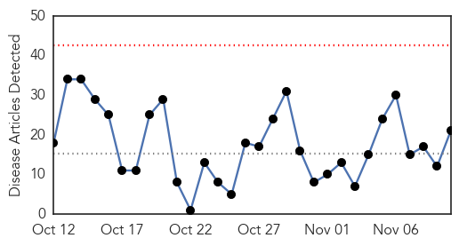
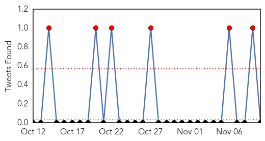
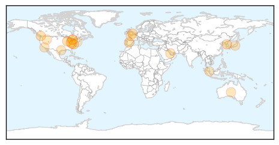

Influenza
30-Day Web Trend
0 alerts, 0 warnings

30-Day Twitter Trend
2 alerts, 0 warnings

Article Locations
Article Confidences

Top Articles:
- 0.999
- 15th MERS fatality in South Korea as number of patients reaches 145
- 0.996
- Get your annual flu shot and increase your odds of wellness
- 0.995
- College students not getting flu vaccine
- 0.987
- The Killeen Daily Herald: Family Living
- 0.980
- CDC Recommends To Get Yearly Influenza Vaccination
- 0.910
- The quest for one-shot flu vaccination for life
- 0.910
- New Model Tracks Virus More Accurately Than Google Flu Trends
- 0.909
- Articles, event listings and opinion
- 0.894
- Articles, event listings and opinion
- 0.848
- Today's stories from newspapers in Caledon
- 0.828
- Three girls of a family diagnosed with H1N1 flu
- 0.787
- Today's stories from newspapers in Orangeville
- 0.771
- Researchers developing new flu vaccine
- 0.751
- November 10, 2015 Archives
- 0.751
- November 10, 2015 Archives
- 0.751
- November 9, 2015 Archives
- 0.751
- November 9, 2015 Archives
- 0.712
- WV officials lift bans on poultry exhibits; warnings continue
- 0.692
- Baby vaccinations remain a cause for concern
- 0.691
- Flu shot mandate unfair for these N.J. workers
- 0.629
- Moms fearing kid flu shot sue city over mandate
Top Tweets:
-
No tweets found for Nov 10, 2015
Meningitis
30-Day Web Trend
1 alerts, 0 warnings

30-Day Twitter Trend
6 alerts, 0 warnings

Article Locations

Article Confidences

Top Articles:
- 0.994
- New SARS-like Virus Detected in Middle East
- 0.987
- Meningitis jab in Africa a 'stunning success'
- 0.984
- Affordable and effective vaccine brings Africa close to elimination of meningitis A
- 0.983
- Scientists mark 'stunning success' of vaccine in virtually ridding Africa of meningitis A
- 0.981
- Meningitis Has Been Virtually Eradicated In Africa
- 0.979
- WHO urges routine meningitis vaccine to avoid resurgence in Africa
- 0.977
- Huge gains on meningitis A in Africa could be under threat, warns WHO
- 0.971
- New meningitis strains could thrive following vaccine success
- 0.966
- MRF Hails Fantastic African Meningitis Vaccination Programme Which Saves Thousands of Lives
- 0.941
- Deadly meningitis strain virtually eliminated in much of Africa - study
- 0.923
- Indian vaccine for meningitis hailed in Africa
- 0.923
- Indian vaccine for meningitis hailed in Africa
- 0.919
- World Tuberculosis Day 2015 How dangerous is tuberculosis (TB) disease Prevention, Diagnose, Treatment
Top Tweets:
- 0.779
- In 2013, only 4 laboratory-confirmed cases of meningitis A were reported by the 26 countries in the African "meningitis belt" VaccinesWork
- 0.730
- Meningitis vaccine developed to battle strain found only in Africa's meningitis belt has been a spectacular success. https://t.co/ZQdxrYuEaz
- 0.588
- The meningitis A vaccine for Africa, MenAfriVac, was developed in response to an outbreak in 1996 which infected >250k ppl in a few months